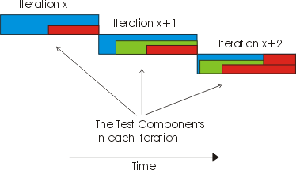
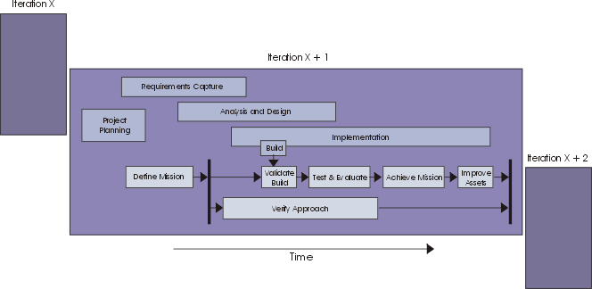

Concepts:
The Lifecycle of Testing
In the RUP software development lifecycle, software is refined through iterations.
In this process environment, the testing lifecycle benefits from following an
equivalent iterative approach. In each iteration, the software development team
will produce one or more Builds, each build being a potential candidate to be
tested.
Because the focus and objectives of the development team differ from iteration
to iteration, the test team members must structure their test effort accordingly.
We suggest that you keep the amount of upfront detailed test planning and design
to the minimum, and where you need to do this, that you aim to produce this
work as close to the time it will be used as possible—we recommend you
address upfront detailed test development no more than an iteration in advance.
Additions, refinements and deletions are made to the tests that are implemented
and executed for each build. Some of these test will be retained and accumulate
in a body of tests, which are used for regression testing subsequent builds
used in each future test cycle. This approach reworks and revises the tests
throughout the process, just as the software itself is revised. There is no
frozen software specification and there are no frozen tests.

Fig 1. Tests evolve over time
This iterative approach—coupled with the use of component architectures—necessitates
consideration of testing for regressions in product quality in each subsequent
build. Any of the tests developed in iteration X are potential candidates for
regression testing in iteration X+1, likewise in iteration X+2 and so on. When
the same test is likely to be repeated several times, it is worth considering
spending the effort to automate the test. Test automation provides an approach
to the repeated testing of usage scenarios, that frees testing staff to explore
testing in new functional areas.
Look at the lifecycle of testing without the rest of the project in the same
picture. This is the work detail breakdown for the Test discipline in a given
iteration:

Fig 2. The testing lifecycle.
This lifecycle aligns with the iteration cycle followed by the rest of the
development team. The Iteration begins with an investigation by the test team
and negotiation with the Project Manager and other stakeholders regarding the
most useful testing work that can be undertaken in the forthcoming iteration.
Most test team members play a part in this work effort.
Each iteration will usually contain at least one test cycle, as shown in Fig
3. It's a fairly typical practice for multiple Builds to be produced per Iteration,
and for a test cycle to be aligned with each build. However, in some cases,
specific Builds will not be tested.
At the same time that the core test effort is underway, a subset of the team
members may also be investigating new testing techniques. This effort attempts
to prove that the techniques work so that the team can rely on them, especially
in subsequent iterations.

Fig 3. An iteration includes one or more test cycles.
The testing lifecycle is a part of the software lifecycle; they should start
in an equivalent timeframe. The design and development process for tests can
be as complex and arduous as the process to develop the software product itself.
If tests do not start in line with the first executable software releases, the
test effort will back-load discovery of too many problems until late in the
development cycle. This often results in a long bug-fixing period being appended
to the end of the development schedule, which defeats the goals and eliminates
the benefits of iterative development.
While test planning and definition activities started early can expose important
faults or flaws in the early specification work, we recommend you choose the
testing work you do in advance carefully. As well as the potential for rework
already mentioned, the test team need to be careful to maintain their role as
impartial quality advisors and not derail the early requirements and design
activities by acting as "quality police". By their very nature these,
early attempts by the project team at understanding the problem and solution
spaces will be flawed. To make unreasonable demands about the quality of this
early work risks alienation of the test team from the rest of the development
group.
Problems found during an iteration can either be solved within the same iteration,
or postponed to the next—a decision that ultimately rests with the Project
Manager role. One of the major tasks for the test team and project managers
is to measure how complete the iteration is by verifying that the iteration
objectives as outlined in the Iteration Plan were met. There is ongoing "requirements
discovery" from iteration to iteration, something you need to be aware
of and be prepared to manage.
The ways in which you will perform tests will depend on several factors: your
application domain, your budget, your company policy, your risk tolerance, and
your staff. How much you invest in testing depends on how you evaluate quality
and tolerate risk in your particular environment.
Copyright
© 1987 - 2001 Rational Software Corporation
|  Disciplines >
Disciplines >
 Test >
Test >
 Concepts >
Concepts >